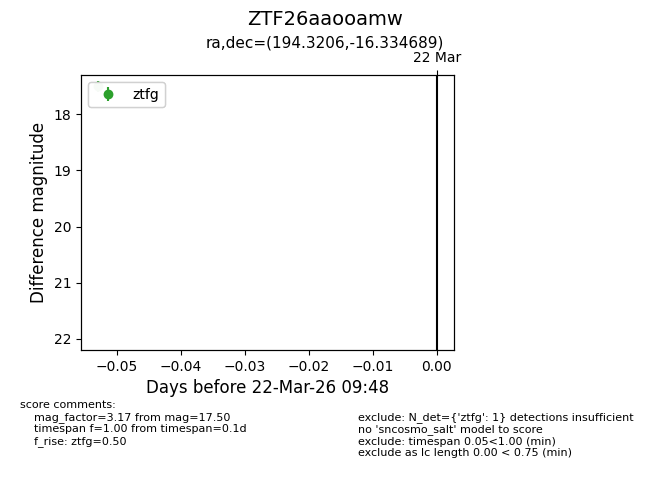
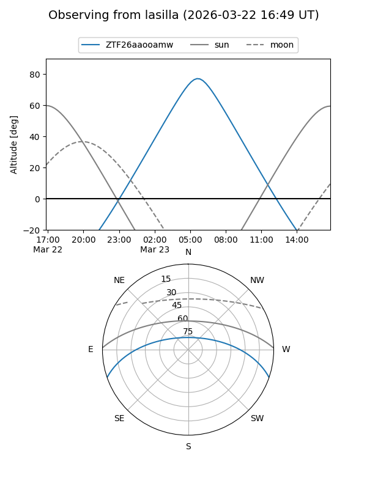
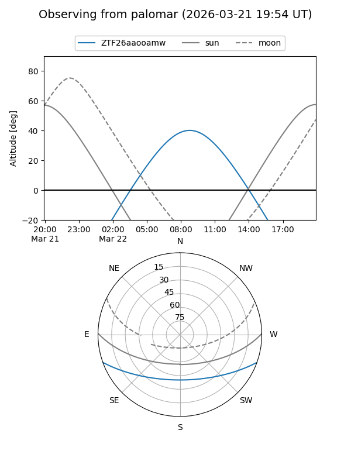

ZTF26aaooamw
Target ZTF26aaooamw at 2026-03-22 09:50
Aliases and brokers:
FINK: link
Lasair: link
ALeRCE: link
alt names
ZTF26aaooamw (ztf,fink_ztf)
Coordinates:
equatorial (ra, dec) = 194.3206,-16.33469
equatorial (HMS+DMS) = 12:57:16.94,-16:20:04.88
galactic (l, b) = (304.9696,+46.51393)
Flags:
Photometry:
last ztfg=17.50
1 ztfg detections
Lightcurve

Visibility


Additional plots